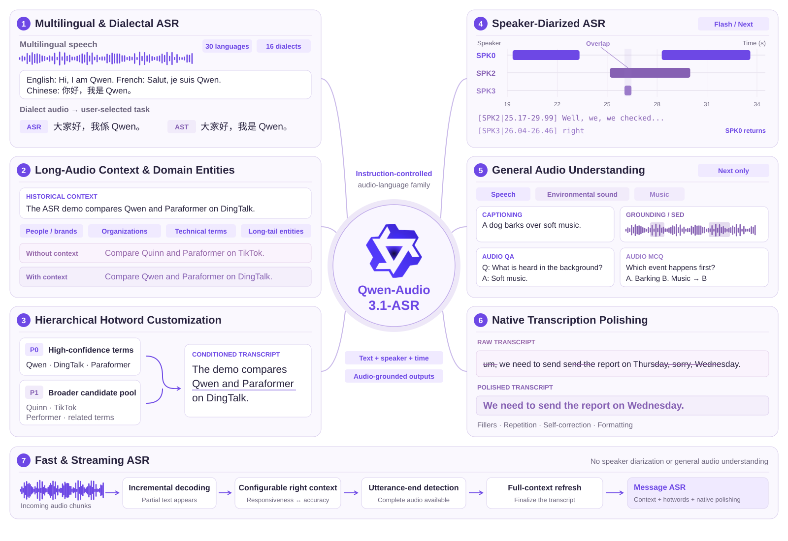
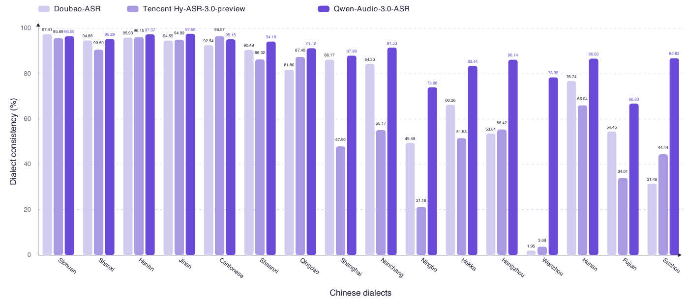
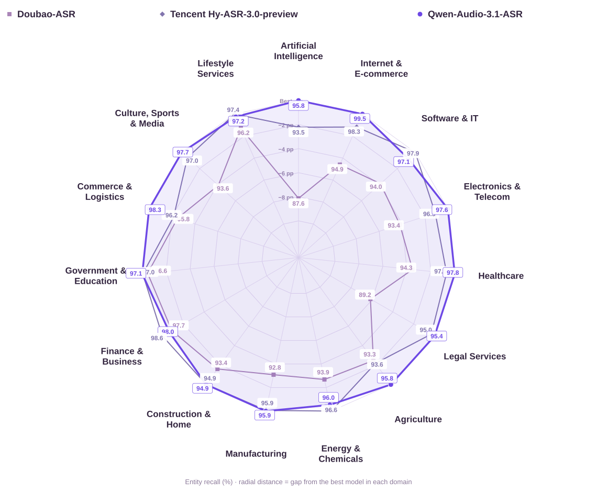

Macro CER on the internal 16-dialect evaluation suite.
QWEN-AUDIO-3.1-ASR
Beyond words.
Speakers. Sound. Meaning.
From multilingual transcription to who said what, when—and what the audio means. A model family for speech recognition, speaker diarization and audio understanding.
30 languages16 Chinese dialectsSpeaker-diarized ASR Flash / NextAudio understanding Next

3.0 reported evaluation
One model,
balanced performance.
Macro error rate on Common Voice 15 across the evaluated languages.
Industry domains where the model reports the outright highest entity recall, with one additional tie.
Interactive audio atlas
Listen across dialects and languages.
Choose a location on either map to hear the original sample and read its source-language transcript with an English translation.
30supported languages
16dialectal varieties
Select a location
Japanese · Japan
日本語
Choose a marker on the map or a name below.
Flexible language prompting
Combine target languages at runtime.
language_hints = ["zh", "ja", "en"]
Browse all 30 supported languages
Dialect evaluation figures below are from the 3.0 report.


Fast & streaming
Listen while the transcript appears.
Play the 18-second Beijing-to-Hangzhou request and watch the transcript appear continuously in a clean side-by-side streaming interface.
Original 3.0 comparison replay · the audio, text and timing are preserved.
Interactive streaming playbackIndustry Voice InputvsQwen-Audio-3.1-ASR
Beijing → Hangzhou travel requestVoice-timbre adjusted · original comparison replay
0:00/0:18
INDUSTRY VOICE INPUTQWEN-AUDIO-3.1-ASR
Samples from the report and launch material
See what the controls change.
Explore context corrections, entity recall, hotword gains, and native polishing without leaving the page.
Established ASR capabilities · examples and results retained from the 3.0 report.
01 / SPEAKER-DIARIZED ASR
Who said what. Exactly when.
Five speakers, overlapping turns, one synchronized transcript. Select a segment to replay it. Available in non-streaming Flash and Next.
Consistent speaker labelsSegment-level timestampsOverlapping speech on separate tracks
02 / GENERAL AUDIO UNDERSTANDING · NEXT
Hear the scene. Understand the event.
Speech, environmental sound and music, interpreted through instructions. Explore seven supplied examples with their original audio and outputs.
03 / EVALUATION
Measured across speech and sound.
Results from the supplied September 18 launch material; industry recall follows the September 11 update. Compare the metrics, not only the headlines.
Speaker-diarized ASR
DER / cpWER (%) ↓ · Lower is better
DER measures speaker diarization errors; cpWER measures speaker-attributed transcription errors. The supplied table reports the lowest values for our model on all six metrics.
Audio understanding
Accuracy (%) ↑. Qwen leads the listed MMAU comparison; Gemini-3.1-Pro scores higher on MMSU.
QWEN-AUDIO-3.1-ASR
Six audio understanding tasks

Historical ASR evaluation reference · display names are unified; reported values are retained, not newly evaluated.
Evaluation evidence
ASR results, retained in full.
Each result view answers a specific performance question; the complete reported tables remain available below. Lower CER/WER is better, while higher recall and consistency are better.
Evaluation note. Dialect and industry-domain evaluations use internal test sets. Public benchmark results in Panel A are taken from official sources, while API systems in Panel B use a unified evaluation pipeline.
For WeNetSpeech-net, all results in Panel B and our model's results in Panel A use corrected reference transcripts, following WenetSpeech issue #63. Competing-system results in Panel A are retained as reported in their original sources.
Table 1 Public Chinese and English ASR benchmarks
Table 2 Multilingual benchmark results
Table 3 Hotword recall with and without conditioning
Table 4 Long-audio contextual corrections
04 / MODEL FAMILY
Choose the capabilities you need.
Five profiles, different capability boundaries. Speaker diarization and general audio understanding are not streaming features.
Capability matrix from the supplied release material. Refer to the service documentation for availability and API details.
Model experience
Choose the deployment profile.
Open the official Model Studio documentation for short-form, file-transcription, or real-time streaming integration.
Existing 3.0 integration documentation · the 3.1 capability matrix is shown above.
01 / Short-form
Qwen-Audio-3.1-ASR-Flash
Speech recognition for audio up to five minutes.
Open documentation ↗ 02 / FileQwen-Audio-3.1-ASR-Flash-Filetrans
Offline transcription for recorded audio files.
Open documentation ↗ 03 / StreamingQwen-Audio-3.1-ASR-Flash-Streaming
Real-time speech recognition over WebSocket.
Open documentation ↗